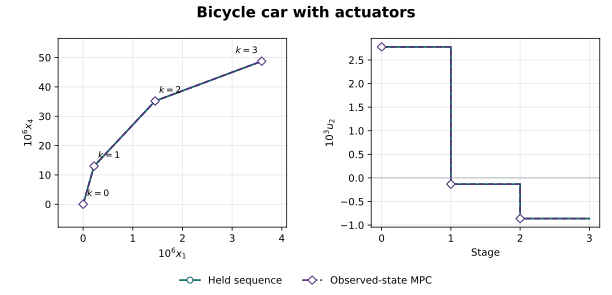
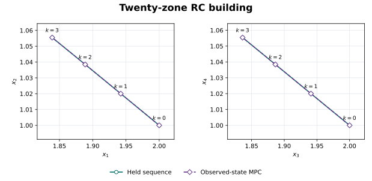

Convex solvers for the same catalogue control tasks
Changing the convex solver recovered seven of the nine routes that the released HiGHS configuration could not complete. The same 35 catalogue models, three control transitions, state and control constraints, and weighted tracking objective were used throughout. Open loop plans once. Observed-state MPC replans from each measured state to the same terminal stage. Forecasts match the deterministic replay.
| Provider | Open loop | MPC | Pairs |
|---|---|---|---|
| Released HiGHS 1.11.0 | 31 | 30 | 30 |
| HiGHS with bounded row scaling | 32 | 31 | 31 |
| Installed Ipopt 3.14.19 | 34 | 34 | 34 |
Rescaling a constraint without changing its feasible points
Multiplying a constraint row and its bounds by the same positive power of two leaves the constraint equivalent in exact arithmetic. The opt-in HiGHS provider checks that the transformation reverses exactly in binary64 and converts row multipliers back to the original units before validation. It permits up to 20 powers of two of row scaling and bounds the magnitudes of scaled row data by 220.
The initial bicycle QP (model 23) needs at most 14 powers of two. Both policies complete after rescaling, and the other 68 saved physical outcomes keep their status and values. Models 27 and 28 need up to 49 and 80 powers of two in their initial QPs and exceed this provider’s admission limits.

Solving with the original sparse rows
The Ipopt provider receives the original sparse QP rows, with bound relaxation and NLP scaling disabled. CSL validates primal feasibility, stationarity, multiplier signs, complementarity, and objective agreement in the original coordinates. Both policies complete on models 23, 27, and 28, and MPC completes the previously interrupted model-30 episode. Across the 61 completed routes shared with released HiGHS, the largest absolute total-cost difference is below 2.07 × 10−9.

The independent source audit checked 25,380 saved matrix entries against the frozen catalogue. A separate rational checker evaluated 136 accepted QP witnesses from the direct probe using their exact stored binary64 values. Over those solves, the largest original-coordinate residuals for primal feasibility, stationarity, and complementarity were 2.22 × 10−13, 1.71 × 10−15, and 9.08 × 10−11, respectively.
The remaining infeasible task
For model 9’s declared continuous relaxation, the first inventory starts at 12 and loses at least 5 per transition. All remaining terms in that inventory update are nonpositive under the saved bounds. Therefore contradicts the terminal lower bound of zero. Both native attempts retain their recorded solver failure. The inventory inequality proves infeasibility directly from the source dynamics and constraints.
Inspect and reproduce the runs
These are numerical coverage results for the saved deterministic tracking tasks. A speed comparison would need separately collected timings. The tested source is recorded in the manifest and available in the row-scaled HiGHS revision and optional Ipopt revision. Each evidence ZIP includes source, raw attempts, a checksum inventory, and the commands in RUN.txt. For comparative replays, extract the included baseline study into prior/ as directed by the run notes.